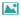

Hinweis:
Die in diesem Abschnitt beschriebenen Aufgaben werden im Kontext eines Channels ausgeführt.
Die Aktionsübersicht zeigt channel-spezifische Statistiken zu Aktionen und ermöglicht die Suche nach Aktionen.
Um die Aktionsübersicht anzuzeigen:
-
Wählen Sie den Management-Kontext aus der Kontextauswahlbox.
Die Navigationsleiste für den Managementkontext wird geöffnet.
-
Klicken Sie in der Navigationsleiste auf Marketing | Aktionsübersicht.
Die Übersichtsseite wird angezeigt.
-
Klicken Sie auf Aktualisieren, um den angezeigten Inhalt neu zu laden.
Hinweis:
Die Schaltfläche Aktualisieren ist nur in Bearbeitungssystemen in Datenreplizierungsumgebungen verfügbar, siehe Datenreplizierung.
Die aktuellen Daten werden abgerufen.
Hinweis:
Die angezeigten Daten werden automatisch durch einen speziellen geplanten Job erfasst. Wenden Sie sich an Ihren Systemadministrator,
um diesen Job zu konfigurieren.
Die angezeigten Informationen bestehen aus:
-
Anzahl der für den Channel konfigurierten Aktionen
-
Anzahl der derzeit aktiven Aktionen
-
Anzahl der deaktivierten Aktionen
-
Anzahl der Aktionscodes
Mit Klick auf einen Eintrag in der Übersicht wird ein vordefinierter Dialog der erweiterten Suche geöffnet, wobei die abgefragten
Daten (d.h. alle aktiven Aktionen) in der Ergebnisliste gezeigt werden. Durch zusätzliche Suchkriterien können Sie das Ergebnis
noch weiter eingrenzen.
Über das Modul Aktionen können Details zu einer speziellen Aktion abgerufen werden, wo nach Aktionen gesucht werden kann,
Detailansichten geöffnet werden können und Aktionen kopiert, deaktiviert oder gelöscht werden können.
Um Details zu einer Aktion anzuzeigen:
-
Wählen Sie den Channel aus der Kontextauswahlbox.
Die Navigationsleiste für den Channel wird geöffnet.
-
Klicken Sie in der Navigationsleiste auf Marketing | Aktionen.
Die Liste mit alle Aktionen in diesem Channel wird angezeigt. Standardmäßig werden alle Einträge alphabetisch aufgelistet.
Um sie neu zu sortieren, klicken Sie auf eine Spaltenüberschrift.
-
Um in der Ansicht nur Aktionen mit bestimmten Kriterien zu sehen, verwenden Sie die einfache oder erweiterte Suche.
Tip:
In der Suche können auch unvollständige Suchbegriffe gefunden werden, z.B. genügt es, Teile eines Aktionsnamens oder einer
Aktionsbeschreibung einzugeben, um ein Ergebnis zu erhalten.
-
Klicken Sie auf den Namen einer Aktion, um Details anzuzeigen.
Das allgemeine Register der Detailansicht wird angezeigt.
In der Aktionsvorschau werden die Auswirkungen einer Aktion in der Storefront angezeigt. Wird die Vorschau einer aktuellen
Aktion gestartet, wendet die Design-Ansicht die Einstellungen an, die für diese Aktion festgelegt wurden, d.h. Konditionen,
Benutzergruppe, Währung und Zeitraum.
Weitere Informationen zur Design-Ansicht finden Sie in Storefront-Content bearbeiten.
Um die Aktionsvorschau zu öffnen:
-
Wählen Sie den Channel aus der Kontextauswahlbox, wählen Sie dann Marketing | Aktionen.
Die Liste mit alle Aktionen in diesem Channel wird angezeigt.
Klicken Sie auf den Namen einer Aktion, um Details anzuzeigen (optional).
-
Klicken Sie auf das Feld Vorschau () für die Aktion, die Sie in der Vorschau sehen möchten.
Die Design-Ansicht mit den aktuellen Aktions-Einstellungen wird angezeigt.
Tip:
In der Liste der Aktionen befinden sich die Schaltflächen zur Vorschau in der Spalte Aktionen. In der Detailansicht einer
Aktion ist das Feld für die Vorschau neben dem Namen im allgemeinen Register zu finden.
Es gibt zwei Möglichkeiten, eine Aktion anzulegen:
Um eine Aktion mithilfe von Aktions-Templates anzulegen:
-
Wählen Sie den Channel aus der Kontextauswahlbox, wählen Sie dann Marketing | Aktionen.
Die Liste mit alle Aktionen in diesem Channel wird angezeigt.
-
Klicken Sie auf Neu.
Eine Liste der verfügbaren Aktions-Templates wird angezeigt.
-
Wählen Sie ein Template aus.
-
Geben Sie die notwendigen Daten an.
-
Wählen Sie Locale und Währung aus.
-
Ordnen Sie die Aktion mindestens einer Applikation zu.
-
Geben Sie die erforderlichen Daten an einschließlich Name und ID, Start-/Enddatum und -Zeit der Aktivierung, Mindestbestellwert,
Rabattaktion und Nachricht.
-
Klicken Sie auf Übernehmen.
Die neue Aktion wird angelegt, folgende Einstellungen werden gespeichert:
Sie werden zur Aktionsliste zurückgeleitet. Wenn Sie die neue Aktion in der Aktionsliste auswählen, wird sie in der Detailansicht
angezeigt; siehe Aktionen manuell anlegen.
Um eine Aktion manuell anzulegen:
-
Wählen Sie den Channel aus der Kontextauswahlbox, wählen Sie dann Marketing | Aktionen.
Die Liste mit alle Aktionen in diesem Channel wird angezeigt.
-
Klicken Sie auf Neu.
Eine Liste der verfügbaren Aktions-Templates wird angezeigt.
-
Wählen Sie Individuelle Aktion
Das allgemeine Register der Detailansicht wird angezeigt.
-
Wählen Sie die Sprache der Storefront, für die Aktionsname und -beschreibung definiert werden sollen.
-
Legen Sie allgemeine Informationen zur Aktion fest.
Geben Sie einen Aktionsnanmen, eine eindeutige ID und eine Beschreibung ein. Der Name wird im gesamten Commerce Management
für diese Kampagne verwendet.
-
Wählen Sie die Währung der Storefront, für die die Aktion verfügbar sein soll.
Sie können die Aktion für alle Storefront-Währungen oder nur für eine bestimmte Währung verfügbar machen. Wählen Sie die gewünschte
Währung aus der Dropdown-Lliste.
Hinweis:
Wenn die Währung für eine Aktion festgelegt wurde, kann sie nicht wieder geändert werden. Wenn Sie ein Budget für die Aktion
festlegen wollen (unten beschrieben), müssen Sie eine bestimmte Währung auswählen.
-
Bestimmen Sie die Priorität der Aktion.
Auf einen Artikel oder eine Bestellung können gleichzeitig mehrere Aktionen zutreffen. In diesem Fall entscheidet eine Rangfolge,
welche Aktionen verwendet werden. Der Rang einer Aktion legt auch fest, welche dynamische Nachricht auf der Seite des Warenkorbs
angezeigt wird, falls mehr als eine Aktion den Anzeigeanforderungen entsprechen.
Die Priorität einer Aktion ist nur von Bedeutung, wenn Aktionen desselben Typs andernfalls gleichrangig wären.
Eine Aktion besitzt entweder die Standard-Priorität (je nach Aktionstyp) oder eine benutzerdefinierte Priorität.
Je höher der von Ihnen eingetragene Wert im Feld Priorität bestimmen ist, desto höher ist die Priorität der Aktion. Der
Wert 0 entspricht der geringsten Priorität.
Die folgende Tabelle zeigt die Standard-Prioritäten für die verschiedenen Aktionstypen, von der höchsten zur niedrigsten:
Tabelle 37: Standard-Platzierungen der Aktionen
| Wert der Platzierung |
Aktionstyp |
| 1000 |
Artikel-Zielpreis |
| 900 |
Artikelabschlag (%) |
| 800 |
Artikelabschlag (fix) |
| 700 |
Versand-Zielpreis |
| 600 |
Versandkostenabschlag (%) |
| 500 |
Versandkostenabschlag (fix) |
| 400 |
Bestellwertabschlag (%) |
| 300 |
Bestellwertabschlag (fix) |
| 200 |
Bonusprodukt |
| 100 |
Ausgeblendetes Bonusprodukt |
Tip:
Die Werte für die Standardpriorität der verschiedenen Aktionstypen können in den Aktionseinstellungen für den Management-Kontext
konfiguriert werden, siehe Aktionseinstellungen verwalten.
-
Weisen Sie der Aktion Applikationen zu.
Wählen Sie unter Aktionstyp das Kontrollkästchen neben der Applikation, für die die Aktion gezeigt werden soll. Sie müssen
mindestens eine Applikation auswählen, andernfalls wird die Aktion nicht in der Storefront angezeigt.
Hinweis:
Dieser Aktion zugewiesener Content wird nur in den Applikationen sichtbar, die für diese Aktion aktiviert sind.
-
Wählen Sie Berechnungsmodell.
Hier können Sie definieren, wie der Gesamtrabatt berechnet wird, falls mehr als eine Aktion zutrifft.
Tabelle 38: Rabatt-Berechnungsmodelle
| Option |
Beschreibung |
| Warenkorb-Grundpreis |
Die Rabatte alle zutreffenden Aktionen werden zusammengefasst und dann auf den Warenkorb-Grundpreis angewendet. |
| reduzierter Preis |
Rabatte der zutreffenden Aktionen werden nacheinander angewendet, so wie es der Platzierungen vorgeben. |
-
Definieren Sie Kombinations-Regeln.
Die Einstellungen, die unter "Kombination" zusammengefasst sind - gleich den Platzierungen - beeinflussen, wie die Aktionen
angewendet werden, wenn mehr als eine Aktion gleichzeitig zutrifft.
Die folgende Tabelle beschreibt verfügbare Optionen zur Kombination von Aktionen:
Tabelle 39: Kombinationsmöglichkeiten für Aktionen
| Option |
Beschreibung |
| frei kombinierbar |
Die Aktion kann mit jeder anderen Aktion frei kombiniert werden. Es gibt keine Beschränkungen. |
| nicht kombinierbar |
Die Aktion kann nicht mit anderen Aktionen kombiniert werden. Dies bedeutet Folgendes für die Platzierung von Aktionen (wenn
mehr als eine Aktion zutrifft): Wenn eine nicht kombinierbare Aktion die höchste Platzierung besitzt, wird nur diese Aktion
verwendet und alle anderen verworfen. Besitzt eine Aktion nicht die höchste Platzierung, so wird sie zusammen mit allen niedriger
platzierten Aktionen verworfen. Jedoch werden alle Aktionen angewendet, die höher platziert sind als die verworfenen.
|
| kombinierbar mit den folgenden Aktionstypen |
Ermöglicht, dass nur Aktionen einen bestimmten Typs mit der aktuellen Aktion kombiniert werden. Markieren Sie eine oder mehr
Aktionstypen mit der Maus, klicken Sie Hinzufügen oder Entfernen, um die markierten Aktionstypen auszuwählen/zu entfernen.
|
Hinweis:
Sie müssen die neue Aktion mindestens einmal speichern, bevor Sie die Kombinations-Einstellungen verändern können. Klicken
Sie auf Übernehmen, um eine Aktion zu speichern.
-
Aktion zu Kampagne zuordnen
-
Legen Sie einen Zeitraum für die Aktion fest.
Legen Sie im Abschnitt Aktivierung ein(e) Start- und Enddatum/-zeit für den Gültigkeitszeitraum der Aktion fest. Während dieser
Zeit wird die Aktion in der Storefront zu sehen sein.
Hinweis:
Wenn Sie die Aktion einer Kampagne zugeordnet haben, müssen sich Start- und Endzeit der Aktion im Zeitraum der Kampagne befinden.
-
Definieren Sie ein Budget.
Jeder Aktion kann ein Budget zugeordnet werden. Sobald das Budget erschöpft ist, wird die Aktion automatisch offline genommen,
unabhängig von anderen Einstellungen, wie z.B. dem Zeitraum.
Hinweis:
Sie können kein Budget festlegen, wenn die Währung der Aktion auf "Alle" gesetzt ist.
Geben Sie für die Festlegung eines Budgets folgende Informationen im Budget-Bereich an:
Tabelle 40: Einstellungen zu Budget von Aktionen
| Option |
Beschreibung |
| Betrag |
Das Budget einer Aktion kann entweder auf "unbegrenzt" oder einen bestimmten Betrag festgelegt werden. Auf Grundlage des zugewiesenen
Budgets und den bereits von Kunden eingelösten Rabatten wird das verbleibende Budget der Aktion berechnet und der Wert auf
der rechten Seite des Abschnitts angezeigt. Wird das Budget auf "unbegrenzt" gesetzt (Standard-Einstellung), ist die Budget-Funktion
im Grunde deaktiviert. Die Sichtbarkeit der Aktion in der Storefront wird einzig durch den Zeitraum bestimmt.
|
| Quelle |
Wählen Sie einen Eintrag aus der Dropdown-Liste, um die Aktion mit einer Budgetquelle zu verbinden. Eine Budgetquelle ist
wie ein Tag, den Sie zur Kategorisierung eines Aktionsbudgets verwenden können. Sie können z.B. eine Budgetquelle einer Aktion
für Partner zuordnen und eine andere für Mitarbeiter. Derzeit hat die Budgetquelle keinen weiteren Einfluss auf die Aktion
oder dessen Budget. Die Liste verfügbarer Budgetquellen kann unter Aktionseinstellungen bearbeitet werden. Für weitere Informationen,
siehe Aktionseinstellungen verwalten.
|
| Aktion offline nehmen wenn überschritten |
Wählen Sie diese Option, wenn Sie die Aktion automatisch offline nehmen wollen, sobald die festgelegte Budgetgrenze erreicht
ist. Hinweis: In der Zeit, in der die Aktion offline gesetzt wird, sind bereits bestehende Sessions berechtigt, den Rabatt
zu erhalten, auch wenn das Budget bereits ausgeschöpft ist.
|
| Benachrichtigung |
Sie können eine E-Mail-Adresse angeben, an die eine Nachricht gesendet wird, wenn das definierte Budget ausgeschöpft ist oder
das verbleibende Budget unter einen bestimmten Prozentsatz fällt, der vom Benutzer definiert werden kann.
|
| Verbleibendes Budget |
Im Feld wird die Differenz zwischen dem zugewiesenen Budget und den bereits eingelösten Rabatten der Aktion angezeigt. |
-
Aktivieren Sie die Aktion.
Damit eine Aktion in der Storefront sichtbar wird, müssen Sie sie aktivieren, indem Sie das Kontrollkästchen Aktiv markieren.
Als Sicherheitsmaßnahme werden neu erstellte Aktionen standardmäßig deaktiviert.
-
Klicken Sie auf Übernehmen, um Ihre Änderungen zu speichern.
Die Aktion wird angelegt. Sie können nun die Ziele, Regeln und Content-Beziehungen der Aktion festlegen. Diese Aufgaben werden
in den folgenden Abschnitten beschrieben:
Nähere Informationen zum Festlegen von Zielen einer Aktion, siehe Ziele einer Aktion festlegen.
Nähere Informationen zum Festlegen von Aktionsregeln, siehe Rabattregeln festlegen.
Nähere Informationen zum Erzeugen von Aktionscodes, siehe Verwaltung von Aktionscodes.
Nähere Informationen zum Festlegen von Content-Beziehungen, siehe Content-Beziehungen für Aktionen verwalten.
Das Verwalten von Aktionen besteht aus folgenden Aufgaben:
Diese Aufgaben werden in den folgenden Abschnitten ausführlich beschrieben.
Um eine bestehende Kampagne zu bearbeiten:
-
Wählen Sie den Channel aus der Kontextauswahlbox, wählen Sie dann Marketing | Aktionen.
Die Liste mit alle Aktionen in diesem Channel wird angezeigt.
-
Klicken Sie auf den Namen der Aktion, die Sie bearbeiten wollen.
Das allgemeine Register der Detailansicht wird angezeigt.
-
Bearbeiten Sie die Einstellungen wie erforderlich.
Die verfügbaren Einstellungen sind beschrieben in Aktionen anlegen.
-
Klicken Sie auf Übernehmen, um Ihre Änderungen zu speichern.
Um eine Kampagne zu deaktivieren:
-
Wählen Sie den Channel aus der Kontextauswahlbox, wählen Sie dann Marketing | Aktionen.
Die Liste mit alle Aktionen in diesem Channel wird angezeigt.
-
Klicken Sie auf den Namen der Aktion, die Sie deaktivieren wollen.
Das Register Allgemein der Detailansicht der Aktion wird angezeigt.
-
Löschen Sie die Markierung im Kontrollkästchen Aktiviert und klicken Sie auf Übernehmen.
Die Aktion ist jetzt offline und für Kunden in der Storefront nicht mehr sichtbar.
Sie können nur Aktionen löschen, die bereits deaktiviert (offline) sind. Für weitere Informationen, siehe Aktionen deaktivieren.
Um eine Kampagne zu löschen:
-
Wählen Sie den Channel aus der Kontextauswahlbox, wählen Sie dann Marketing | Aktionen.
Die Liste mit alle Aktionen in diesem Channel wird angezeigt.
-
Markieren Sie das Kontrollkästchen der Aktion, die sie löschen wollen.
-
Klicken Sie auf Löschen, dann auf OK, um das Löschen zu bestätigen.
Die Aktion wurde mit ihren Konfigurationen aus dem System gelöscht.
Tip:
Eine Alternative, um eine Aktion zu löschen, ist das Feld Löschen in der Detailansicht der Aktion.
Damit eine Aktion in der Storefront aktiviert ist, müssen zwei Bedingungen erfüllt sein:
-
Aktionzeitraum und
-
Aktivierungsstatus
Um eine Aktion zu veröffentlichen:
-
Wählen Sie den Channel aus der Kontextauswahlbox, wählen Sie dann Marketing | Aktionen.
Die Liste mit alle Aktionen in diesem Channel wird angezeigt.
-
Klicken Sie auf den Namen der Aktion, die Sie veröffentlichen wollen.
Das Register Allgemein der Detailansicht der Aktion wird angezeigt.
-
Legen Sie einen Zeitraum für die Aktion fest.
Legen Sie im Abschnitt Aktivierung ein(e) Start- und Enddatum/-zeit für den Gültigkeitszeitraum der Aktion fest.
Hinweis:
Wenn Sie die Aktion einer Kampagne zugeordnet haben, müssen sich Start- und Endzeit der Aktion im Zeitraum der Kampagne befinden.
-
Aktivieren Sie die Aktion.
Markieren Sie das Kontrollkästchen Aktiv.
-
Klicken Sie auf Übernehmen.
Somit wird die Aktion aktiviert und in der Storefront für den geplanten Zeitraum verfügbar gemacht.
In einer Umgebung der Datenreplizierung müssen Aktionen, die im Bearbeitungssystem erzeugt werden, im Zielsystem veröffentlicht
werden. Dies geschieht entweder automatisch im Kontext von regulärer Datenreplizierung (siehe Was ist Datenreplizierung? oder Verwaltung von Replikationsaufgaben) oder durch manuelle Zuordnung von Aktionen, die auf dem Zielsystem veröffentlicht werden sollen.
Die manuelle Veröffentlichung von Aktionen (d.h. sofortige Publizierung der Aktion im Zielsystem) kann auf zwei Arten durchgeführt werden:
Um eine Aktion manuell aus einer Liste von Aktionen zu publizieren, führen Sie folgende Schritte aus:
-
Wählen Sie den Channel aus der Kontextauswahlbox, wählen Sie dann Marketing | Aktionen.
Die Liste mit alle Aktionen in diesem Channel wird angezeigt.
-
Wählen Sie entweder Alle auswählen oder markieren Sie Kontrollkästchen der Aktion(en), die Sie publizieren wollen.
-
Klicken Sie Publizieren im Zielsystem.
Die Liste konfigurierter Zielsysteme wird angezeigt.
-
Wählen Sie ein Zielsystem aus und klicken Sie auf Fertigstellen.
Die von Ihnen gewählten Aktionen werden im gewählten Zielsystem publiziert.
Um eine Aktion manuell aus der Detailansicht zu publizieren, führen Sie folgende Schritte aus:
-
Wählen Sie den Channel aus der Kontextauswahlbox, wählen Sie dann Marketing | Aktionen.
Die Liste mit alle Aktionen in diesem Channel wird angezeigt.
-
Klicken Sie auf den Namen einer Aktion, um Details anzuzeigen.
Das Register Allgemein der Detailansicht wird geöffnet.
-
Wechseln Sie zum Register Eigenschaften.
-
Klicken Sie Publizieren im Zielsystem.
Die Liste konfigurierter Zielsysteme wird angezeigt.
-
Wählen Sie ein Zielsystem aus und klicken Sie auf Fertigstellen.
Die von Ihnen gewählten Aktionen werden im gewählten Zielsystem publiziert.
Jede Aktion kann Folgendes als Ziel haben:
-
einzeln ausgewählte Kunden,
-
ein bestimmtes Kundensegment oder
-
Kundensegmente, die zu einem Affiliate-Partner oder einem Affiliate-Partnerprogramm gehören.
Nach der Aktivierung wird die Aktion auf alle Objekte angewendet, die der Zielgruppe zugeordnet sind.
Zielgruppen werden im Register Zielgruppe in der Detailansicht der Aktion verwaltet. Hier können Sie Artikel zur Zielgruppe
hinzufügen oder davon entfernen.
Um Objekte zur Zielgruppe der Aktion hinzuzufügen:
-
Wählen Sie den Channel aus der Kontextauswahlbox, wählen Sie dann Marketing | Aktionen.
Die Liste mit alle Aktionen in diesem Channel wird angezeigt.
-
Klicken Sie auf den Namen einer Aktion, um Details anzuzeigen.
Das Register Allgemein der Detailansicht wird geöffnet.
-
Öffnen Sie das Register Zielgruppe.
In diesem Register werden alle Kunden, Kundensegmente und Affiliate-Partner angezeigt, die derzeit der Aktion zugeordnet sind.
-
Klicken Sie auf Zuordnen in einer der drei Kategorien der Zielgruppenmitglieder.
Eine Liste mit Objekten der Kategorie wird mit zugehörigen Kontrollkästchen angezeigt.
Die Liste der Kunden enthält alle Kunden, die derzeit in dem gewählten Channel registriert sind.
Die Liste von Kundensegmenten enthält vordefinierte Gruppen (z. B. alle registrierten Kunden oder alle Neukunden) und jegliche
benutzerdefinierte Gruppen.
Hinweis:
Um Kundensegmente als Zielgruppe zuordnen zu können, muss mindestens ein Segmentierungsdienst für den Channel konfiguriert
sein, siehe Kundensegmente.
Die Liste der Affiliate-Partner besteht aus allen Partnern, die für diesen Channel definiert wurden.
-
Markieren Sie das Kontrollkästchen neben den Objekten, die sie der Zielgruppe der Aktion hinzufügen wollen, und klicken Sie
dann auf Zuordnen.
Um Objekte von der Zielgruppe der Aktion zu entfernen:
-
Wählen Sie den Channel aus der Kontextauswahlbox, wählen Sie dann Marketing | Aktionen.
Die Liste mit alle Aktionen in diesem Channel wird angezeigt.
-
Klicken Sie auf den Namen einer Aktion, um Details anzuzeigen.
Das Register Allgemein der Detailansicht wird geöffnet.
-
Öffnen Sie das Register Zielgruppe.
In diesem Register werden alle Kunden, Kundensegmente und Affiliate-Partner angezeigt, die derzeit der Aktion zugeordnet sind.
Hinweis:
In diesem Register werden nur Kundensegmente angezeigt, die von einem aktiven Segmentierungsdienst bereitgestellt wurden.
Ist ein bestimmter Dienst deaktiviert, werden alle von ihm bereitgestellten Kundensegmente als Zielgruppen entfernt.
-
Wählen Sie die zu entfernenden Objekte aus und klicken Sie auf Aufheben.
-
Klicken Sie zur Bestätigung auf OK.
Die Objekte werden von der Aktion entfernt und aus der Liste der Zielgruppe entfernt.
Das Verwalten von Aktionscodes besteht aus folgenden Aufgaben:
-
Suche nach Aktionscodes
Die Aktionscodesuche ermöglicht es, nach Aktionscodes zu suchen. Dies kann nützlich sein, um die Gültigkeit oder die Zuordnung
eines Codes zu überprüfen.
-
Aktivieren von Aktionscodes
Wie in Online-Marketing-Verwaltung: Begriffe beschrieben, können Aktionen entweder implizit oder explizit sein. Wenn Sie eine explizite Aktion ausführen, müssen Sie die
Verwendung von Codes aktivieren und der Aktion zuordnen.
-
Code-Gruppen erstellen
Eine Code-Gruppe bezeichnet einen Zusammenschluss von Aktioncodes. Eine Code-Gruppe kann einer einzigen oder mehreren Aktionen
zugeordnet werden.
-
Aktionscodes erzeugen und Code-Gruppen zuordnen
Nachdem eine Code-Gruppe erzeugt wurde, müssen ihr Aktioncodes zugeordnet werden.
Codes können einer Code-Gruppe auf drei Arten zugewiesen werden:
-
Codes per Hand eingeben
-
Massengenerierung von Codes basierend auf einem benutzerdefinierten Muster (die gewünschte Code-Länge und ein Code-Präfix
können bestimmt werden)
-
Codes aus einer externen Quelle importieren (CSV-Datei)
Bei der Erzeugung weist das System der Code-Gruppe, die Sie bearbeiten, automatisch Codes zu.
-
Festlegen einer Zielgruppe für eine Code-Gruppe
Jede Code-Gruppe braucht eine Zielgruppe. Sie können entweder die Zielgruppe der Aktion wählen, der die Code-Gruppe zugewiesen
ist, oder die Zielgruppe speziell für die Code-Gruppe definieren.
Hinweis:
Um Kundensegmente als Zielgruppe zuordnen zu können, muss mindestens ein Segmentierungsdienst für den Channel konfiguriert
sein, siehe Kundensegmente.
-
Code-Gruppen mit Aktionen verbinden
Nachdem eine Codes erzeugt wurden, müssen der Aktion mitteilen, dass die Codes zur Einlösung freigegeben werden. Dies geschieht
durch die Verbindung von der beinhaltenden Code-Gruppe mit einer oder mehr Aktionen.
-
Aktionscodes deaktivieren und löschen
Nachdem die Aktion einige Zeit läuft, können Codes gelöscht werden, die schon von Kunden eingelöst wurden, um das System zu
bereinigen.
Außerdem können bei wiederholtem Betrug oder Missbrauch von Aktionscodes alle oder einige der verteilten Codes sofort ungültig
gemacht werden.
Um Codes zu deaktivieren oder zu löschen, haben Sie zwei Möglichkeiten:
-
Geben Sie manuell eine Liste von Codes in ein Textfeld ein, um diese zu löschen
-
Finden Sie Codes im Modul Code-Gruppe und löschen sie diese
lesen Sie die folgenden Abschnitte für nähere Instruktionen zu den oben genannten Aufgaben.
Um nach Aktionscodes zu suchen, führen Sie die folgenden Schritte aus:
-
Wählen Sie den Channel aus der Kontextauswahlbox, wählen Sie dann Marketing | Aktionscodes.
Dadurch wird der Bereich Aktionscodes mit der Standard-Registerkarte Suche geöffnet.
-
Geben Sie den Aktionscode unter Berücksichtigung von Groß-/Kleinschreibung und Leerzeichen ins Eingabefeld Aktionscode ein.
Um eine kundenspezifische Suche durchzuführen, geben Sie die E-Mail-Adresse, den Anmeldenamen oder die Kunden-ID eines vorhandenen
Kunden in das entsprechende Eingabefeld ein. Alternativ kann die Schaltfläche Auswählen ( ) genutzt werden, um die Kundensuche aufzurufen.
) genutzt werden, um die Kundensuche aufzurufen.
-
Klicken Sie auf Suchen oder drücken Sie die Eingabetaste, um die Suche zu starten.
Falls vorhanden, wird der Code mit zusätzlichen Informationen zu Einlösungsstatus und Gültigkeitsstatus angezeigt.
-
Klicken Sie auf den Namen des Aktionscodes, um die Detailansicht der Aktionscodesuche aufzurufen.
Tip:
Wenn das Eingabefeld für die Kundensuche entweder leer ist oder eine gültige E-Mail-Adresse, einen gültigen Anmeldenamen oder
eine gültige Kunden-ID enthält, wird die Aktionscodesuche sofort ausgeführt. Wenn die eingegebene E-Mail, der Anmeldename
oder die Kunden-ID unvollständig oder ungültig ist, wird die Kundensuche basierend auf den angegebenen Suchbegriffen ausgeführt.
Sobald ein Kunde ausgewählt wird, wird die Aktionscodesuche erneut ausgelöst.
Eine Erläuterung der Detailansicht der Aktionscodesuche finden Sie unter Aktionscodesuche.
Diese Aufgabe kann im Register Aktionscode der Detailansicht einer Aktion durchgeführt werden:
-
Wählen Sie den Channel aus der Kontextauswahlbox, wählen Sie dann Marketing | Aktionen.
Die Liste mit alle Aktionen in diesem Channel wird angezeigt.
-
Klicken Sie auf den Namen einer Aktion, um Details anzuzeigen.
Das Register Allgemein der Detailansicht wird geöffnet.
-
Öffnen Sie das Register Aktionscode.
Das Register Aktionscode wird angezeigt.
-
Markieren Sie das Kontrollkästchen Gutschein-Code erforderlich und klicken Sie Übernehmen.
Der Abschnitt Aktionscode-Konfiguration wird angezeigt.
-
Konfigurieren Sie einmalige oder mehrmalige Verwendung von Codes und klicken Sie Übernehmen.
Eine Aktion kann nur mit einem einzigen Aktionscode erzeugt werden, der für alle Kunden gilt, oder mit einzelnen Codes für
jeden Kunden. Mehrere Codes werden den Aktionen durch Code-Gruppen zugewiesen.
Wählen Sie eine der zwei Optionen und geben Sie die erforderlichen Informationen ein, wie es folgende Tabelle zeigt.
Tabelle 41: Konfiguration von Aktionscode-Gebrauch
| Option |
Beschreibung |
| Einzelnen Aktionscode verwenden |
Geben Sie einen einzigen Code an, den Sie an Ihre Zielgruppe verteilen möchten. Legen Sie fest, wie oft der Code einlösbar
sein soll in Bezug auf einen einzelnen Kunden und während des gesamten Aktionszeitraums.
|
| Aktionscode-Gruppe(n) benutzen |
Wählen Sie diese Option, wenn Sie für Ihre Aktion Code-Gruppen erzeugen und zuordnen wollen. Für weitere Informationen, siehe
Aktionscode-Gruppen anlegen.
|
-
Klicken Sie auf Übernehmen, um Ihre Änderungen zu speichern.
Um eine neue Aktionscode-Gruppe anzulegen:
-
Wählen Sie den Channel aus der Kontextauswahlbox, wählen Sie dann Marketing | Aktionscodes und wechseln Sie zur Registerkarte
Aktionscode-Gruppen.
Eine Liste der bestehenden Aktionscode-Gruppen wird angezeigt.
-
Klicken Sie auf Neu.
Das allgemeine Register der Detailansicht der Code-Gruppe wird angezeigt.
-
Geben Sie die notwendigen Informationen an.
Die folgende Tabelle zeigt dies ausführlicher:
Tabelle 42: Attribute Aktionscode-Gruppe
| Option |
Beschreibung |
| Name, ID, Beschreibung: |
Geben Sie einen Namen, einen eindeutigen ID-String und einen Beschreibungstext für die Code-Gruppe an. |
| Kontrollkästchen Aktiv |
Markieren Sie das Kontrollkästchen Aktiv, um die Code-Gruppe zu aktivieren. Solange die Code-Gruppe nicht aktiviert wurde,
werden die der Gruppe zugeordneten Codes bei Eingabe in der Storefront nicht vom System akzeptiert.
|
| Aktivierung |
Geben Sie eine Aktivierungszeit für die Code-Gruppe an. Soll die Code-Gruppe so lang aktiviert werden wie die zugehörige Aktion
anhält, markieren Sie das Kontrollkästchen "Aktiv in Aktionszeitraum". Andernfalls definieren Sie einen anderen Aktivierungszeitraum
für die Code-Gruppe.
|
| Einlösung |
Bestimmen Sie, wie oft ein Aktionscode eigelöst werden kann, entweder in Bezug auf einen einzelnen Kunden oder auf alle Kunden.
Die Wiederverwendung eines Codes kann unbegrenzt oder auf eine spezielle Zahl begrenzt sein.
|
| Aktionstyp |
Wenn Sie das Kontrollkästchen "Einlösung in Filiale" markieren, so können Kunden einen Aktionscode nicht nur online, sondern
auch in ihrer Filiale vor Ort einlösen.
|
-
Klicken Sie auf Übernehmen, um Änderungen zu speichern.
Fahren Sie mit dem Erzeugen und Zuordnen von Aktionscodes fort, wie im folgenden Abschnitt beschrieben.
Dieser Abschnitt erläutert, wie Codes per Hand eingegeben werden und wie Codes nach Mengen erzeugt werden. Für nähere Informationen
zum Import aus CSV-Dateien, siehe Aktionsdaten-Import und -Export .
Das Erzeugen von Aktionscodes erfolgt im Register Codes in der Detailansicht der Code-Gruppe.
Um neue Codes manuell aus der einzugeben, führen Sie folgende Schritte aus:
-
Wählen Sie den Channel aus der Kontextauswahlbox, wählen Sie dann Marketing | Aktionscodes und wechseln Sie zur Registerkarte
Aktionscode-Gruppen.
Eine Liste der bestehenden Aktionscode-Gruppen wird angezeigt.
-
Markieren Sie die Code-Gruppe, für die Sie neue Codes erzeugen wollen.
Die Detailansicht der Code-Gruppe wird angezeigt.
-
Öffnen Sie das Register Codes.
Das Register Codes zeigt eine Liste von Codes, die derzeit mit der Code-Gruppe verbunden sind.
-
Klicken Sie auf Manuell hinzufügen.
Es erscheint ein Textfeld zur Eingabe von Codes.
-
Geben Sie die neuen Codes ein und klicken Sie Hinzufügen.
Geben Sie per Hand neue Codes ein oder kopieren Sie sie aus anderer Quelle und fügen Sie sie in das Textfeld ein. Jeder Code
muss in einer neuen Zeile stehen, darf eine Höchstlänge von 128 Zeichen nicht überschreiten und muss eindeutig sein.
Wenn Sie Hinzufügen klicken, liest das System die Codes ein und weist sie automatisch der aktuellen Code-Gruppe zu. Wenn Codes
nicht den oben genannten Anforderungen entsprechen, werden diese vom System zurückgewiesen und Ihnen zur Bearbeitung angezeigt.
Um das System neue Codes nach Menge erzeugen zu lassen, tun Sie Folgendes:
-
Wählen Sie den Channel aus der Kontextauswahlbox, wählen Sie dann Marketing | Aktionscodes und wechseln Sie zur Registerkarte
Aktionscode-Gruppen.
Eine Liste der bestehenden Aktionscode-Gruppen wird angezeigt.
-
Markieren Sie die Code-Gruppe, für die Sie neue Codes erzeugen wollen.
Die Detailansicht der Code-Gruppe wird angezeigt.
-
Öffnen Sie das Register Codes.
Das Register Codes zeigt eine Liste von Codes, die derzeit mit der Code-Gruppe verbunden sind.
-
Klicken Sie auf Generieren und geben Sie die erforderlichen Informationen an.
Die folgende Tabelle zeigt dies ausführlicher:
Tabelle 43: Aktionscodes nach Menge erzeugen
| Option |
Beschreibung |
| Code-Präfix: |
Jeder Code kann optional mit einem benutzerdefinierten festen Präfix-String versehen werden. Zum Beisipiel ist bei der Eingabe
von "X-MAS_" der entstehende Code "X-MAS_FD42P".
|
| Codelänge: |
Bestimmt die Länge des variablen Teils des Codes. Die Gesamtlänge des Codes (Präfix und variabler Teil) darf 128 Zeichen nicht
überschreiten.
|
| Anzahl der Codes: |
Legt fest, wie viele Codes das Sytem erzeugen wird. Wird eine große Anzahl an Codes erzeugt, kann dies je nach verfügbarer
Hardware und aktueller Serverbelastung einige Zeit dauern.
|
| Ausgeschlossene Zeichen |
Legt Zeichen fest, die nicht für Aktionscodes verwendet werden sollen, z.B. potenziell irreführende, mehrdeutige Zeichen wie
"l" oder "I". Trennen Sie mehrere Zeichen durch Komma.
|
-
Klicken Sie auf Generieren.
Das System erzeugt die neuen Codes auf Basis Ihrer Vorgaben und weist sie der aktuellen Code-Gruppe zu.
Um eine Zielgruppe für eine Code-Gruppe festzulegen:
-
Wählen Sie den Channel aus der Kontextauswahlbox, wählen Sie dann Marketing | Aktionscodes und wechseln Sie zur Registerkarte
Aktionscode-Gruppen.
Eine Liste der bestehenden Aktionscode-Gruppen wird angezeigt.
-
Klicken Sie auf den Namen der Code-Gruppe, die Sie bearbeiten wollen.
Das allgemeine Register der Detailansicht der Code-Gruppe wird angezeigt.
-
Öffnen Sie das Register Zielgruppe.
Nach Systemstandard wird die Zielgruppe der zugehörigen Aktion verwendet. Wenn Sie spezifische Ziele der Code-Gruppe definieren
wollen:
-
Entfernen Sie die Markierung aus dem Kontrollkästchen Aktions-Zielgruppe benutzen und klicken Sie auf Übernehmen.
Es werden zwei Abschnitte zur Zuordnung von Kundensegmenten und Affiliate-Partnern angezeigt.
-
Klicken Sie auf Neu und ordnen Sie Artikel aus der angezeigten Liste verfügbarer Zielelemente zu.
Hinweis:
Um Kundensegmente als Zielgruppe zuordnen zu können, muss mindestens ein Segmentierungsdienst für den Channel konfiguriert
sein, siehe Kundensegmente.
Diese Aktion kann entweder im Reigster Allgemein der Detailansicht Code-Gruppe oder im Register Aktionscode der Aktion-Detailansicht
ausgeführt werden.
Die folgenden Schritte setzen voraus, dass Sie Option 1 ausführen werden:
-
Wählen Sie den Channel aus der Kontextauswahlbox, wählen Sie dann Marketing | Aktionscodes und wechseln Sie zur Registerkarte
Aktionscode-Gruppen.
Eine Liste der bestehenden Aktionscode-Gruppen wird angezeigt.
-
Klicken Sie auf die gewünschte Code-Gruppe.
Die Detailansicht der Code-Gruppe wird angezeigt. Unten im Register wird eine Liste mit Aktionen angezeigt, die der Code-Gruppe
derzeit zugeordnet sind.
-
Klicken Sie auf Hinzufügen.
Eine Liste aller Aktionen im Management-Kontext wird angezeigt.
-
Markieren Sie eine oder mehrere Aktionen und klicken Sie auf Zuordnen.
Die Zuordnung zwischen Code-Gruppe und Aktion(en) wird erzeugt.
Hinweis:
Sie können keine Aktionen auswählen, die so konfiguriert wurden, dass sie keinen Aktionscode erfordern. Aktivieren Sie zunächst
die Verwendung von Aktionscodes, wie in Aktivieren von Aktionscodes für Aktionen beschrieben
Um Codes per Hand zu deaktivieren:
-
Wählen Sie den Channel aus der Kontextauswahlbox, wählen Sie dann Marketing | Aktionscodes und wechseln Sie zur Registerkarte
Aktionscode-Gruppen deaktivieren.
Ein Textkasten wird angezeigt.
-
Geben Sie die Codes ein, die sie deaktivieren wollen.
Geben Sie manuell neue Codes ein oder kopieren Sie sie aus anderer Quelle und fügen Sie sie in das Textfeld ein. Verwenden
Sie für jeden Code eine neue Zeile.
-
Klicken Sie Deaktivieren und bestätigen Sie mit OK.
Das System verarbeitet die Code-Liste und deaktiviert diese. Wenn das System einen angegebenen Code nicht finden kann, wird
das angezeigt und Sie werden zur Eingabe aufgefordert.
Um eine Aktion im Modul Code-Gruppe zu löschen oder zu deaktivieren:
-
Wählen Sie den Channel aus der Kontextauswahlbox, wählen Sie dann Marketing | Aktionscodes und wechseln Sie zur Registerkarte
Aktionscode-Gruppen.
Eine Liste der bestehenden Aktionscode-Gruppen wird angezeigt.
-
Markieren Sie den Namen der Code-Gruppe, deren Codes Sie verändern wollen.
Das Register Allgemein der Code-Gruppe wird angezeigt.
-
Öffnen Sie das Register Codes.
Das Register Codes zeigt eine Liste aller Codes, die zur Code-Gruppe gehören.
-
Markieren Sie das Kontrollkästchen neben den Codes, die Sie deaktivieren oder löschen wollen.
-
Klicken Sie auf Deaktivieren oder Löschen und bestätigen Sie mit OK.
Die ausgewählten Codes wurden deaktiviert oder gelöscht.
Sie können für jede Aktion eine oder mehrere Rabattregeln definieren. Eine Rabattregel definiert eine Reihe von Bedingungen,
die zum Aulösen der Aktion nötig sind, und einen Rabatt, der bei Anwendung der Aktioin gegeben wird. Eine Bedingung kann ein
bestimmtes Preislimit sein oder die Anzahl an Artikeln, die im Warenkorb liegen. Der Rabatt definiert den geldwerten Vorteil,
der dem Kunden angeboten wird. Dies kann ein finanzieller Rabatt, gratis Geschenkverpackung oder kostenfreier Versand sein.
Das Anlegen und Bearbeiten von Rabattregeln ist im Register Rabattregeln in der Detailansicht Aktionen möglich.
Um Bedingungen für eine Rabattregel zu konfigurieren:
-
Wählen Sie den Channel aus der Kontextauswahlbox, wählen Sie dann Marketing | Aktionen.
Die Liste mit alle Aktionen in diesem Channel wird angezeigt.
-
Klicken Sie auf den Namen der Kampagne, die Sie bearbeiten wollen.
Die Detailansicht der Aktion wird angezeigt.
-
Öffnen Sie das Register Rabattregeln.
Das Register zeigt alle Regeln an, die derzeit für die Aktion konfiguriert sind. Wenn bis jetzt keine Regeln konfiguriert
wurden, zeigt das Register eine einzige, leerstehende Regel.
-
Fügen Sie eine neue Bedingung hinzu.
Im Abschnitt Aktionsbedingung der Regel, die Sie bearbeiten möchten, klicken Sie auf Neu, um eine neue Bedingung hinzuzufügen.
Es wird eine Dropdown-Liste mit verfügbaren Bedingungstypen angezeigt.
-
Wählen Sie einen Bedingungstyp von der Dropdown-Liste und klicken Sie auf Übernehmen.
Je nach gewähltem Bedingungstyp können mehrere Konfigurationsschritte erforderlich sein. Für eine Beschreibung der verfügbaren
Optionen und weiteren Informationen, die Sie für die Konfiguration der verschiedenen Bedingungstypen brauchen könnten, siehe
Rabattregeln.
-
Wenn Sie alle erforderlichen Informationen eingegeben haben, klicken Sie OK, um die neue Bedingung abschließend zu erzeugen.
Wenn nötig, wiederholen Sie die gerade beschriebenen Schritte, um mehrere Bedingungen hinzuzufügen.
-
Kombinieren Sie Bedingungen mit logischen Operatoren.
Wenn Sie mehr als eine Bedingung für eine Regel konfiguriert haben, müssen erfolgt die Kombination der Bedingungen durch die
logische Operatoren UND oder ODER. Wählen Sie den gewünschten Operator aus der linken Seite der Dropdown-Liste und speichern Sie Ihre Änderungen mit Übernehmen.
Um einen Rabatt für eine Rabattregel zu konfigurieren:
-
Wählen Sie den Channel aus der Kontextauswahlbox, wählen Sie dann Marketing | Aktionen.
Die Liste mit alle Aktionen in diesem Channel wird angezeigt.
-
Klicken Sie auf den Namen der Kampagne, die Sie bearbeiten wollen.
Die Detailansicht der Aktion wird angezeigt.
-
Öffnen Sie das Register Rabattregeln.
Das Register zeigt alle Regeln an, die derzeit für die Aktion konfiguriert sind. Wenn bis jetzt keine Regeln konfiguriert
wurden, zeigt das Register eine einzige, leerstehende Regel.
-
Fügen Sie einen Rabatt hinzu.
Im Abschnitt Aktionsrabatt der Regel, die Sie bearbeiten möchten, klicken Sie auf Neu, um eine neuen Rabatt hinzuzufügen.
Es wird eine Dropdown-Liste mit verfügbaren Rabatttypen angezeigt.
-
Wählen Sie einen Rabatttyp von der Dropdown-Liste und klicken Sie auf Übernehmen.
Je nach gewähltem Rbatttyp können mehrere Konfigurationsschritte erforderlich sein. Für eine Beschreibung der verfügbaren
Optionen und weiteren Informationen, die Sie für die Konfiguration der verschiedenen Rabatttypen brauchen, siehe Rabattregeln.
-
Wenn Sie alle erforderlichen Informationen eingegeben haben, klicken Sie OK, um den neuen Rabatt abschließend zu erzeugen.
Die folgende Beschreibung setzt voraus, dass Sie bereits eine Rabattregel konfiguriert haben, so wie in den vorigen Abschnitten
beschrieben.
Um eine dynamische Warenkorb-Meldung für eine Regel zu konfigurieren:
-
Wählen Sie den Channel aus der Kontextauswahlbox, wählen Sie dann Marketing | Aktionen.
Die Liste mit alle Aktionen in diesem Channel wird angezeigt.
-
Klicken Sie auf den Namen der Kampagne, die Sie bearbeiten wollen.
Die Detailansicht der Aktion wird angezeigt.
-
Öffnen Sie das Register Rabattregeln.
Das Register zeigt alle Regeln an, die derzeit für die Aktion konfiguriert sind. Wenn bis jetzt keine Regeln konfiguriert
wurden, zeigt das Register eine einzige, leerstehende Regel.
-
Klicken Sie im Abschnitt Nachricht der Regel, die Sie bearbeiten möchten, auf Neu.
Es werden Optionen zum Bestimmen des Grenzwertes für die Anzeige der Meldung und ein Editor zum Verfassen eines Meldungstextes
angezeigt.
-
Bestimmen Sie den Schwellwert.
-
Verfassen Sie den Text der Meldung.
Verwenden Sie den angezeigten Editor, um den Text der Meldung einzugeben. Abhängig von den konfigurierten Bedingungen können
Sie Ihre Nachricht mit dynamischem Inhalt "anreichern", der jedes Mal aktualisiert wird, wenn der Storefront-Benutzer die
Inhalte im Warenkorb ändert.
Die Platzhalter für verfügbaren dynamischen Inhalt werden in der Tabelle rechts angezeigt. Kopieren Sie diese einfach von
der Tabelle und fügen Sie sie in Ihren Text ein.
-
Klicken Sie auf Übernehmen, um Ihre Änderungen zu speichern.
Der Inhalt von Aktions-Mitteilungen wird im Register Mitteilungen in der Aktions-Detailansicht konfiguriert:
-
Wählen Sie den Channel aus der Kontextauswahlbox, wählen Sie dann Marketing | Aktionen.
Die Liste mit alle Aktionen in diesem Channel wird angezeigt.
-
Klicken Sie auf den Namen der Kampagne, die Sie bearbeiten wollen.
Die Detailansicht der Aktion wird angezeigt.
-
Öffnen Sie das Register Mitteilung.
Die Registerkarte zeigt eine Reihe von individuell konfigurierbaren Nachrichten, eine für jeden Inhaltsausschnitt.
-
Wählen Sie die Sprache, auf die der Inhalt zutrifft, aus der Dropdown-Liste und klicken Sie Übernehmen.
-
Konfigurieren Sie den Content mit den verfügbaren Editoren.
Die folgende Tabelle zeigt dies ausführlicher:
Tabelle 44: Konfiguration von Aktions-Mitteilungen
| Teil des Inhalts |
Beschreibung |
| Symbol |
Um dem Inhalt der Aktions-Mitteilung ein Symbol hinzuzufügen, klicken Sie auf das Symbol zum Einfügen oder Bearbeiten von
Bildern () in der Menüleiste des Editors und bestimmen Sie das URL-Attribut des Bildes. Das Symbol wird später neben dem Titel auf
konfigurierten Produktseiten angezeigt, z. B. auf der Produktdetailseite.
|
| Titel |
Der Titel wird zusammen mit dem Symbol auf den konfigurierten Seiten angezeigt, z. B. Produktdetailseite und Warenkorbseite. |
| Langtitel |
Titeltext, der auf konfigurierten Seiten angezeigt wird, z. B. auf der Produktdetailseite und im Popup-Fenster für Aktionsdetails. |
| Regelbeschreibung |
Beschreibungstext in einem Pop-up-Fenster. |
| Rechtliche Hinweise |
Aktions-spezifischer Disclaimer in einem Pop-up-Fenster. Wenn Sie das Textfeld frei lassen, wird stattdessen der Standardtext
für rechtliche Hinweise angezeigt, wie er in den Aktions-Einstellungen für die Applikation festgelegt wurde, siehe Aktionseinstellungen verwalten.
|
Statt die Inhalte des Pop-up-Fensters zu definieren, können Sie das Kontrollkästchen Externe URL benutzen markieren und eine
URL aus externer Quelle benutzen, auf die sich der Link der Aktions-Detailansicht bezieht.
Um einer Aktion Content-Komponenten zuzuordnen:
-
Wählen Sie den Channel aus der Kontextauswahlbox, wählen Sie dann Marketing | Aktionen.
Die Liste mit alle Aktionen in diesem Channel wird angezeigt.
-
Klicken Sie auf den Namen der Kampagne, die Sie bearbeiten wollen.
Die Detailansicht der Aktion wird angezeigt.
-
Öffnen Sie das Register Content.
Eine Liste bestehender Content-Beziehungen für Seitenvarianten und Komponenten wird angezeigt.
-
Klicken Sie auf Zuordnen, um eine neue Content-Zuordnung zu erzeugen.
Eine Liste der verfügbaren Komponenten wird angezeigt.
-
Wählen Sie eine oder mehr Komponenten und klicken Sie auf Fertigstellen.
Um eine Content-Beziehung zu entfernen, wählen Sie das entsprechende Content-Objekt und klicken Sie auf Aufheben. Beachten
Sie, dass Sie Content nur auf derselben Management-Kontext-Ebene aufheben können, auf der Sie die Beziehung erstellt haben.
Tip:
Im Register Content der Aktion können Sie auch Content-Komponenten bearbeiten. Beachten Sie dabei, dass die Komponenten per
Referenz verbunden sind. Sofern also eine Komponente mit mehreren Content-Komponenten oder Seitenvarianten verbunden ist,
sind Änderungen an der Komponente in allen Content-Elementen, zu der die Komponente gehört, sichtbar.
Um Anlagen für eine Aktion hochzuladen, tun Sie Folgendes:
-
Wählen Sie den Channel aus der Kontextauswahlbox, wählen Sie dann Marketing | Aktionsanlagen-Upload.
Die Seite Aktionsanlagen-Upload wird angezeigt.
-
Wählen Sie die Storefront-Sprache, für die Sie Dateien hochladen wollen und klicken Sie Übernehmen.
-
Verwalten Sie die Verzeichnisstruktur für Ihre Anlagen-Dateien im Abschnitt Verzeichnisse der Seite.
Die aktuelle Verzeichnisstruktur wird als Baum dargestellt.
Unter dem Aktionsanlagen Stammverzeichnis, welches Sie erzeugen können, können Sie wie gewünscht Verzeichnisse umbenennen und löschen, um Ihre Dateien
zu organisieren.
-
Im Abschnitt Anlagen der Seite können Sie Inhalte eines einzigen Verzeichnisses verwalten.
Der Abschnit Anlagen zeigt die Inhalte des Verzeichnisses, das gerade oben in der Verzeichnis-Baumansicht markiert ist. Um
in ein anders Verzeichnis zu wechseln, klicken Sie auf den Namen des Verzeichnisses in der Baumansicht.
Verwenden Sie die Felder Name und Suche, um die Inhalte der Dateiliste einzugrenzen.
Um eine Datei auf den Server hochzuladen, klicken Sie Durchsuchen, finden Sie die Datei, die Sie hochladen möchten, und klicken
Sie auf Upload.
Die Datei wird auf den Server geladen und in der Dateiliste angezeigt.
Bestimmte Operationen in der Verwaltung von Aktionen können mittels Stapelprozessen mit mehreren Aktionen gleichzeitig ausgeführt
werden. Operationen, die als Stapelprozesse ausgeführt werden können, sind:
-
Aktionen zu Zielgruppe/Affiliate-Partner zuordnen
-
Aktionen zu Zielgruppe - Kundensegmente zuordnen
-
Aktionen zu Zielgruppe - Kunden zuordnen
-
Aktionen löschen
-
Aktionen exportieren
Hinweis: Dieser Stapelprozess verwendet erneut den Aktions-Export wie beschrieben in Aktionsdaten-Import und -Export .
Um Aktionen in Stapelprozessen zu bearbeiten:
-
Wählen Sie den Channel aus der Kontextauswahlbox, wählen Sie dann Marketing | Aktionen.
Die Liste mit alle Aktionen in diesem Channel wird angezeigt.
-
Suchen Sie die zu bearbeitenden Aktionen.
Markieren Sie die Kontrollkästchen der gewünschten Aktionen in der Listenansicht, und klicken Sie auf Auswahl bearbeiten.
Alternativ können Sie eine Suche ausführen und auf Alles bearbeiten klicken, um das gesamte Suchergebnis zu bearbeiten.
-
Markieren Sie eine Aktion, und klicken Sie auf Weiter.
Die weiteren Schritte hängen von der hier gewählten Operation ab.
Hinweis:
In Abhängigkeit von Typ und Konfiguration des Intershop Commerce Management-Systems und der Menge an Daten, die geändert werden
sollen, kann eine Bulk-Operation (z. B. Stapelprozesse, Import- und Exportptozesse, Auditberichte) negative Effekte für die
Systemleistung bzw. die Datenkonsistenz haben. Kontaktieren Sie Ihren Intershop Commerce Management-Systemadministrator, bevor
Sie so eine Bulk-Operation auslösen.
Hinweis:
Informationen über Aktionen sowie Aktionscodes werden schlussendlich als spezielle Zahlungsdaten in der Bestellung gespeichert.
Abhängig von Ihrem Geschäftsmodell ist das ICM möglicherweise nicht das Datenpflegesystem. Wenn die Bestellung beispielsweise
in ein ERP-System exportiert und daher im ICM gelöscht wurde, können Sie über das Datenpflegesystem auf Aktionsinformationen
für bestimmte Bestellungen zugreifen.